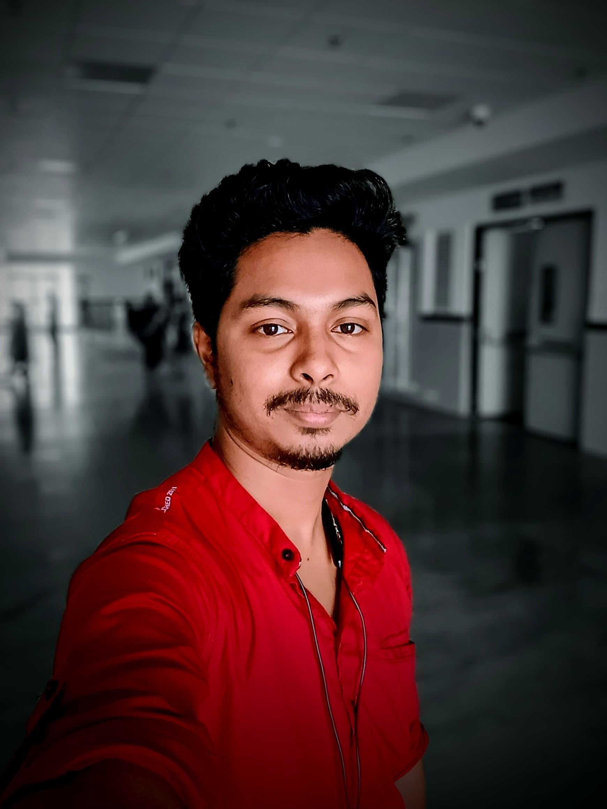

Sanju Halder

Summary
Dynamic IT professional with a Diploma and BSc degree in IT, proficient in HTML, CSS, and C programming,
along with advanced skills in MS Word, Excel, and PowerPoint.
Experienced in web design, having completed projects utilizing HTML and CSS.
Successfully completed a 6-month internship, gaining hands-on experience in the field.
Currently excelling as a Resource Manager in a USA-based IT Consulting company,
demonstrating strong leadership and organizational abilities.
Known for delivering exceptional results and driving project success.
Eager to leverage my diverse skill set and experience to contribute effectively to challenging
projects and drive organizational growth
Education
- Secondary (WBBSE - 2009) : Pannalal Institution
- Higher Secondary (WBCHSE - 2011) : Pannnala Institution
- Bachelor Of Science (WBSU - 2015) : RKMVCC
- MCA (Distance Education - Pursuing) : IGNOU
Work Experience
- Resource Manager - Mindsgroup Infotech LLC
January 2024 - Present
- Talent Acquisition: Leading the recruitment process, including sourcing candidates,
conducting interviews, and making hiring decisions to build a skilled and diverse team.
- Resource Management: Allocating resources effectively to projects based on skill sets,
availability, and project requirements to ensure optimal utilization of talent.
- Vendor Management: Managing relationships with external vendors or subcontractors
to augment internal resources as needed and ensure project requirements are met.
- Communication: Maintaining Communication via Call & Email both, with Consultants
and Clients for better understandings.
- Web Designer internship
July 2017 - January 2018 (6 month)
- Website Design: Collaborate with senior designers or project leads
to create visually appealing and user-friendly website layouts and
interfaces using HTML and CSS.
- Front-End Development: Implement website designs using HTML and CSS,
ensuring cross-browser compatibility, responsiveness, and accessibility.
- Basic PHP Development: Assist in integrating dynamic features
and functionality into websites using basic PHP scripting,
such as form processing, data validation,
and content management system (CMS) customization.
- User Experience (UX) Design: Contribute ideas and suggestions
to enhance the overall user experience of websites,
including navigation, interaction design, and usability testing.
- Graphic Design: Create and optimize graphics, images,
and multimedia elements for use on websites, adhering to
branding guidelines and design standards.
- Testing and Debugging: Conduct thorough testing and
debugging of websites to identify and resolve any issues or bugs,
ensuring optimal performance and functionality across different devices and browsers.
- Documentation and Reporting: Maintain accurate documentation of design and development processes,
including code comments, version control, and project documentation.
Provide regular progress updates to project leads or supervisors.
- Collaboration and Communication: Work collaboratively with team members, including designers,
developers, and project managers, to achieve project goals and deliver high-quality results.
Communicate effectively with team members and stakeholders to gather requirements, provide updates, and address feedback.
Skills
- Communication:
- Verbal and written communication
- Interpersonal skills
- Collaboration and teamwork
- Talent Acquisition and Recruitment:
- Sourcing and screening candidates
- Interviewing and selection
- Resource Management:
- Allocation and scheduling
- Project staffing
- Resource optimization
- Technical Skills:
- HTML
- CSS
- Basic PHP
- Web design principles
- Responsive design
- Graphic design tools (Adobe Photoshop)
- Content management systems (WordPress)
- MS Word, Excel, PowerPoint
- Problem-Solving and Analytical Skills
- Organizational and Time Management
- Adaptability and Flexibility
- Customer Focus
- Continuous Learning and Development
Certification
- Diploma in IT (2019)
- Skill Development from NIESBUD
Other
Hobbies
Contact me